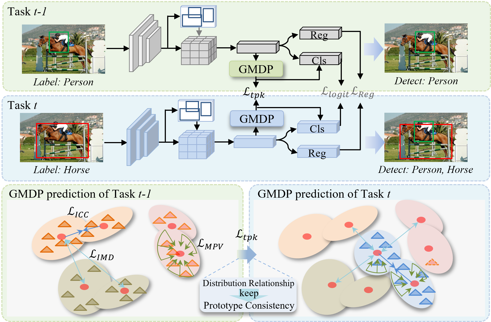

"High-dimension Prototype is a Better Incremental Object Detection Learner", ICLR 2025
作者: 岩杰（博士生），陈立群，赵天明，张涛，王国栋，颜露新，钟胜，周嘉欢，邹旭
通讯作者: 周嘉欢，邹旭
增量目标检测（IOD）任务要求模型能够在持续学习新增类别数据的过程中，同时维持对旧类别数据的识别与定位能力。该任务的核心挑战在于高维特征空间复杂性，需同时克服识别和定位任务中的灾难性遗忘问题——即模型学习新类别知识后，对旧类别数据的识别精度和定位准确性会显著退化。现有主流方法多依赖知识蒸馏策略缓解灾难性遗忘，然而，此类方法存在明显局限：（1）知识偏移问题突出：由于无法获取旧任务数据，蒸馏过程中易出现知识偏移，导致新旧知识迁移效率低；（2）原型表征粗糙：现有原型学习方法将特征质心（忽略分布信息）或单一高斯分布（导致类间特征重叠）作为原型，难以适配IOD复杂的高维特征空间；（3）稳定性与适应性失衡：难以在保留旧知识的同时高效学习新知识，导致模型在新旧任务上的性能难以兼顾。
针对上述问题，本文提出了一种基于高维原型学习的增量目标检测方法。具体贡献如下：（1）高维原型表示机制：提出高斯混合分布原型（GMDP），通过动态调整类分布原型的组件权重、均值和方差，更精确地刻画类内和类间差异，无需保留旧任务数据即可灵活表示特征分布，有效缓解知识偏移；（2）高维学习辅助策略：设计长度缩放渐进学习策略，通过逐步学习高维特征的判别性信息，降低复杂特征空间的学习难度；（3）原型可塑性增强机制：提出动态自适应原型优化（DAPO）策略，通过类间均值分散、类内组件聚合和原型方差最小化，提升原型的适应性与区分度。实验结果表明，该方法可集成到基于知识蒸馏的IOD方法中，在PASCAL VOC和MS-COCO数据集上，相较于四个基线方法均实现大幅性能超越，在不同增量设置下均取得当前最优结果，充分验证了其有效性。
该论文的第一作者是华中科技大学人工智能与自动化学院2020级博士生王岩杰，通讯作者是周嘉欢助理教授（北京大学）和邹旭讲师（华中科技大学）。